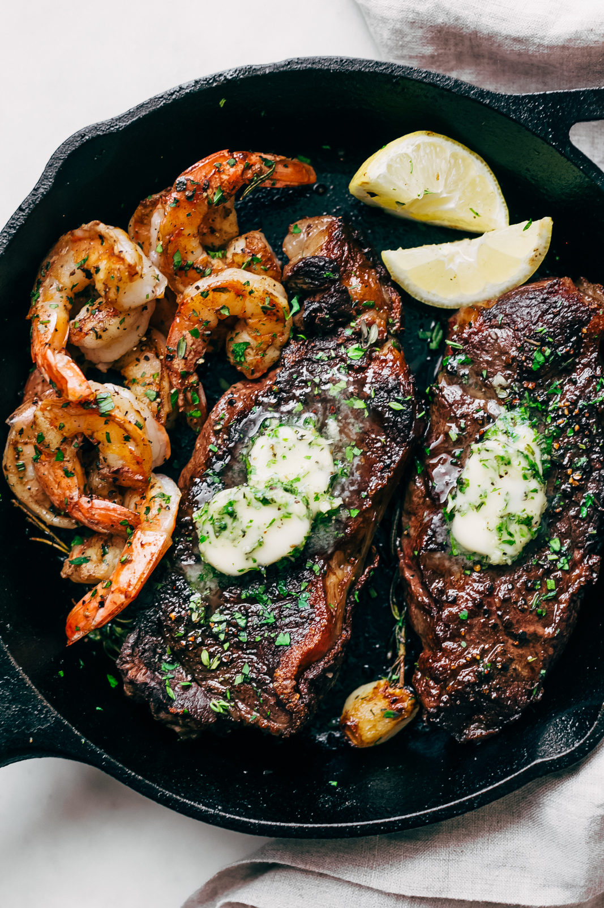

steak and shrimp

steak and shrimp is a classic that goes way back, a carnivores dream and a vegans worst nightmare
steak and shrimp is by no means a hard dish to make but its taste and even romantic aura have no ceiling,
from a hard days work coming home to have a quick and easy filling dish. to a nice sunday night with the family or significant other.
steak and shrimp can be made and used for any occasion at no hassle to you. the shrimp compliments the steak perfectly adding the right amount
of seafood mixxed with a solid piece of meat to give you back the energy you spent during the day.
INGREDIENTS
- fresh or frozen shrimp
- steak, your choice of cut
- lemon or lime
- herbs of your choice i recommends thyme for the steak and chives for the shrimp
- butter and/or oil
cooking steps
- starting off you want to bring two pans to med/high heat. in the pan for the shrimp melt half a stick
of butter, and in the pan for the steak a few drops of oil
- once the butter is melted in the shrimp pan, throw in a few cloves of chopped garlic and the shrimp and let sit, stiring ocasionally.
- when the steak pan is up to heat lay the steak from the close side and slowly drop away from you to assure no oil splashes back on you.
- after a few minutes flip the steak and cook the other side, in the shrimp pan squeeze in some lime or lemon juice and turn the pan off,
shrimp cooks fast and you dont want to over cook it.after the pan is off sprinkle in some chopped chives.
- after the steak has cooked on both sides, now lower the heat of the pan and put in some butter, also adding in some minced garlic and thyme.
- the earlier you take the steak off the pan the rarer it will be, cook enough to your liking.
- last step is to plate and enjoy the meal is done.